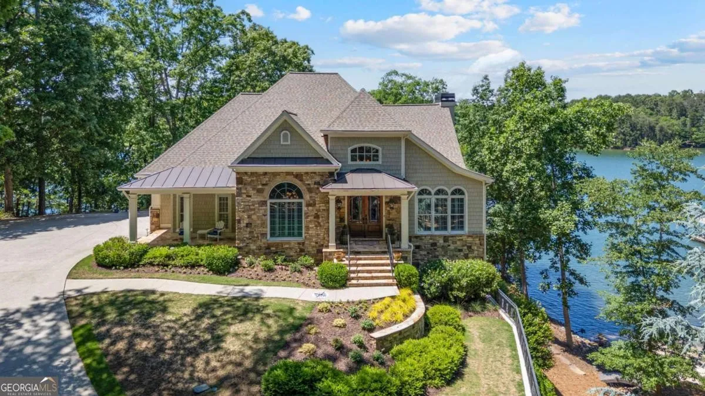
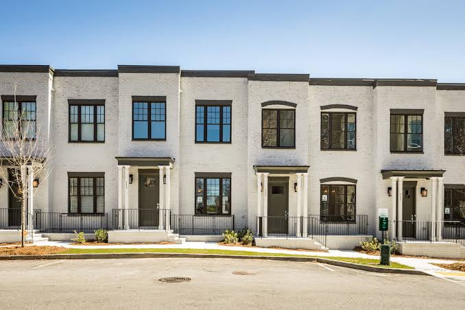
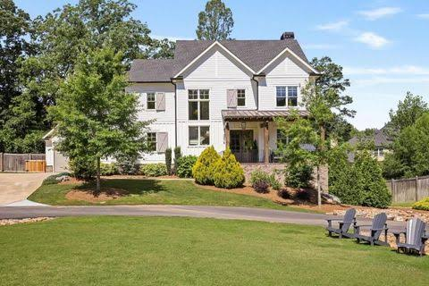

Local Market Expertise
North Atlanta
Communities
From gated luxury in Alpharetta and Milton to Buckhead high-rises, Roswell's historic canton, and Forsyth County's fast-growing family neighborhoods — Britney Javens knows every market, every street, and every school district along the GA-400 corridor.
Alpharetta & Milton, GA
Prestige, Privacy &
Top-Rated Schools
Alpharetta and Milton represent the pinnacle of North Atlanta luxury living. Known for their award-winning Fulton County schools, master-planned communities, and proximity to the vibrant Alpharetta City Center, these cities consistently rank among Georgia's most desirable places to live.
Milton stands apart with its equestrian estates, large lot sizes, and strict zoning that preserves the rural character despite being minutes from everything. Alpharetta draws tech professionals, young families, and executives with its world-class dining, Avalon shopping, and thriving corporate corridor along GA-400.
- ✓ Top-rated Fulton County schools including Cambridge, Milton & Alpharetta High
- ✓ Avalon — upscale shopping, dining & entertainment hub
- ✓ Equestrian properties & large estate lots in Milton
- ✓ Gated communities: The Manor Golf & CC, White Columns, St. Ives
- ✓ New construction townhomes & luxury single-family homes available

Roswell & Johns Creek, GA
Historic Streets &
Riverfront Living
Roswell blends one of metro Atlanta's most beloved historic districts — the restaurants and galleries of Canton Street — with miles of Chattahoochee riverfront parks and trails. It's the rare city where an 1850s home, a swim-tennis neighborhood, and a modern townhome can all be a short walk from a great dinner.
Next door, Johns Creek is a planner's dream: consistently ranked among the safest and best-run cities in Georgia, anchored by nationally recognized schools and country club communities like St. Ives and the Country Club of the South. Both cities offer exceptional value for buyers who want established neighborhoods with mature trees and real community.
- ✓ Canton Street — historic Roswell's dining & arts district
- ✓ Chattahoochee River parks, trails & outdoor lifestyle
- ✓ Johns Creek — regularly ranked among America's safest cities
- ✓ Top schools: Northview, Johns Creek & Chattahoochee High
- ✓ Country club living: St. Ives, Country Club of the South, Horseshoe Bend

Cumming & Forsyth County, GA
Georgia's Fastest Growing
County — For Good Reason
Forsyth County has been one of the fastest-growing counties in the entire United States for over a decade — and once you visit, it's easy to see why. Cumming offers an incredible combination of value, space, top schools, and a small-town feel with big-city access.
From master-planned swim-tennis communities with resort-style amenities to homes near Lake Lanier's southwestern shore, Forsyth County delivers exceptional quality of life at a price point that still makes sense. Families flock here for the nationally ranked schools, low crime rates, and strong sense of community.
- ✓ Forsyth County Schools — consistently top-ranked in Georgia
- ✓ Southwest Lake Lanier access — parks, marinas & weekend boating
- ✓ The Collection at Forsyth — dining, shopping & entertainment
- ✓ Master-planned communities with swim, tennis & trails
- ✓ Easy GA-400 access to Alpharetta & Atlanta in 30–40 min

Buckhead · Chastain Park · Brookhaven · Sandy Springs
Atlanta's Premier
Intown Addresses
North Atlanta's intown corridor is where the city's energy meets its most established neighborhoods. Buckhead delivers everything from luxury high-rise condos to gated estates on Tuxedo Road, with Chastain Park's amphitheater, golf course, and horse park anchoring one of the city's most beloved enclaves.
Brookhaven and Sandy Springs offer the sweet spot many buyers are looking for — walkable villages, renovated ranches and new construction, quick access to Buckhead and the Perimeter's job centers, and a genuine neighborhood feel inside the city. For professionals who want energy without sacrificing green space, this corridor is hard to beat.
- ✓ Buckhead — luxury condos, estate streets & world-class dining
- ✓ Chastain Park — amphitheater, golf, horse park & park-side homes
- ✓ Brookhaven Village & Dresden Drive's walkable restaurant row
- ✓ Sandy Springs — City Springs district & Chattahoochee river parks
- ✓ Minutes to Midtown, Perimeter Center & major hospitals

Chamblee · Norcross · Duluth, GA
Walkable Downtowns &
Room to Grow
The Peachtree corridor northeast of the city is quietly home to some of metro Atlanta's best value — and its most charming small downtowns. Historic Norcross and downtown Duluth have both transformed into genuine destinations, with town greens, breweries, restaurants, and festivals that give each city a real center of gravity.
Chamblee, meanwhile, has become one of the metro's fastest-revitalizing intown cities, with new townhomes and mixed-use development along the rail line and easy access to Buckhead and the Perimeter. For first-time buyers, young families, and investors, this corridor offers growth that the established luxury markets simply can't match.
- ✓ Downtown Duluth — town green, restaurants & year-round events
- ✓ Historic Norcross — one of Gwinnett's most charming downtowns
- ✓ Chamblee's rapid revitalization & new construction
- ✓ Buford Highway's world-famous international dining
- ✓ Strong value & appreciation potential vs. neighboring markets